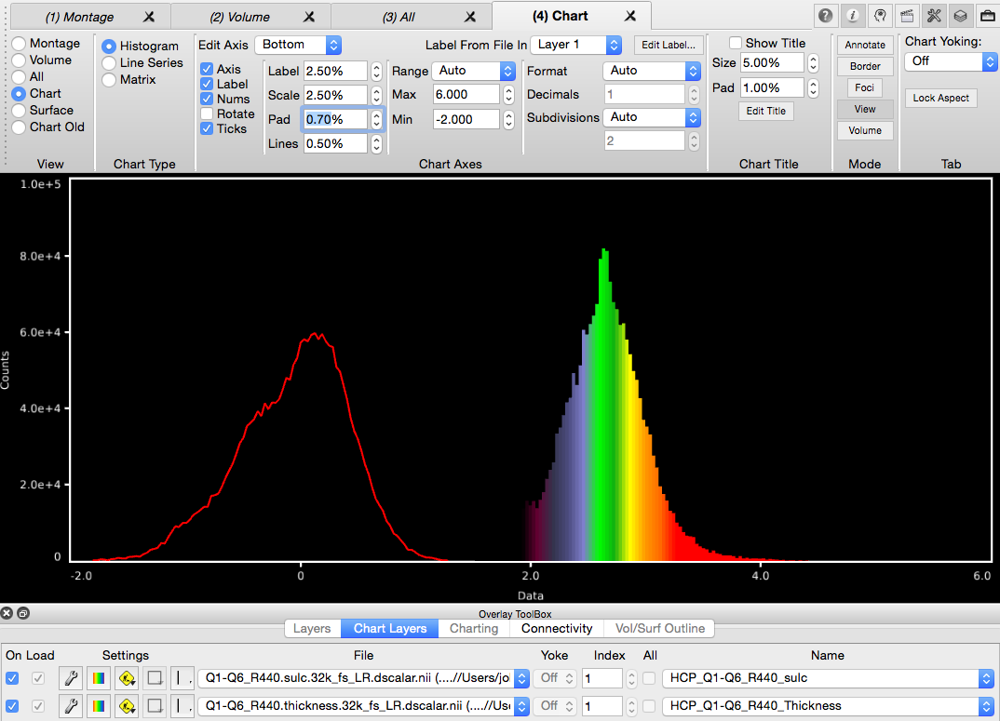
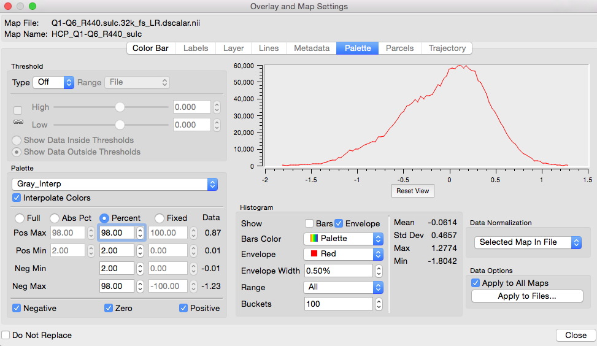
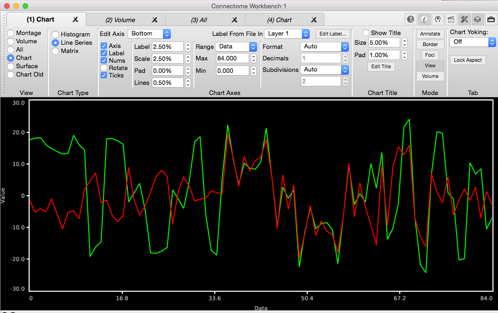
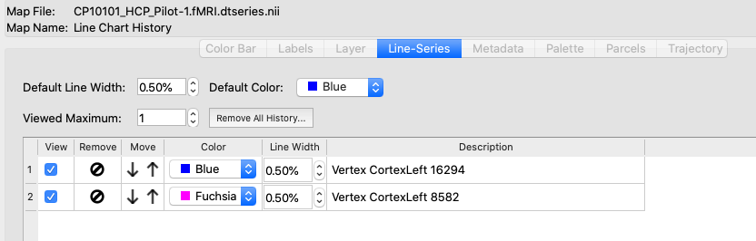
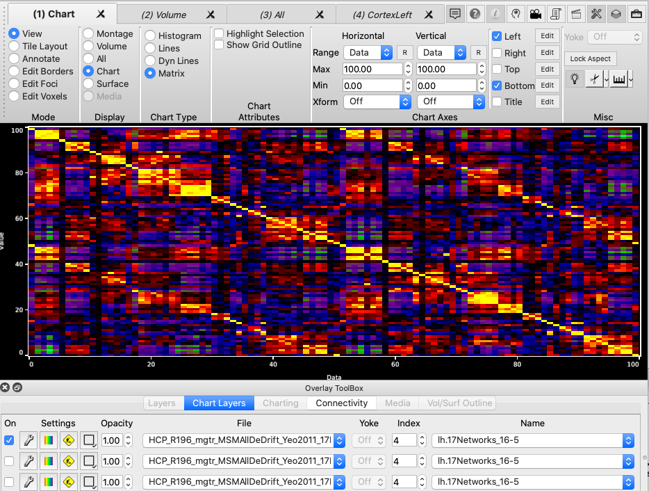

Charting Overview
With the release of 1.3.0, charting has been completely revised. The
previous version of charting is still available by selecting the
Chart Old in Toolbar->View. Any scenes created with the
older version of charting should display correctly in Chart
Old. In addition, wb_view will attempt to convert old versions
of charting to the new charting functionality.
Charting has expanded to include the display of histograms in
addition to the pre-existing support for matrices and line-series
data. An important feature of Charting is the simultaneous
display of multiple charts for the selected chart type. In the
Toolbar, the Chart Layers tab provides the selection of charts, as
layers, similar to Layers used in the Overlays for surfaces and
volumes.
Histogram Charts
Histogram charts are available for any data file that contain one or
more maps of scalar data and this includes many CIFTI file types,
GIFTI metric files, and volume files. A histogram shows the
distribution of data within a single map with an option to average
the data from all maps. This map contain the same data that is
mapped to brainordinates in surface and volume views. To view
a histogram chart, change Toolbar->View mode to Chart and select
Histogram in Toolbar->Chart Type. In Toolbox->Chart
Layers, enable an overlay using an On checkbox and then choose a
file and map for display as a histogram. Multiple histograms
can be displayed using multiple layers. When displaying more
than one histogram, one may want to change the histogram chart from
Bars to Envelope by clicking the Layer's wrench button, selecting
the Palette tab, and selecting the appropriate check boxes in the
Histogram section. There are a variety of additional options
for controlling the display of histograms.


Line-Series Charts
Line-Series charts are available for most data files that contain
multiple maps of scalar data. A line-series chart shows one
data element from each map for a selected brainordinate (surface
vertex or volume voxel). To display line-series charts from a
data-file, one must enable the layer by checking the On checkbox and
enable loading of line charts from the data-file by checking the
Load checkbox. Note that the Load checkbox is a property of
the file so if the same file is in more than one layer, the Load
checkbox will maintain the same checked status in these
layers. Once loading is enabled for a file, one must identify
brainordinates by clicking the mouse on a surface vertex or a volume
voxel. Doing so will load the data for the selected
brainordinate and display the data as a line-chart. A history
of line-charts loaded from a data file is available on in the Lines
section of the Overlay and Map Settings dialog (click the Wrench
button in the row containing the layer). One sets the number
of chart lines displayed along with editing properties that include
the color and thickness of the chart lines.


Matrix Charts
Matrix charts are available for a limited number of files that
contain parcellated connectivity. By default the full matrix
is displayed. If the matrix is square (number of rows in the
data file matches the number of columns) a button in the Layer
controls the display of the matrix as the full matrix or the lower
or upper quadrant. The palette mapping for coloring the matrix
is identical to that used for display of the file's data in surface
and volume overlays.
